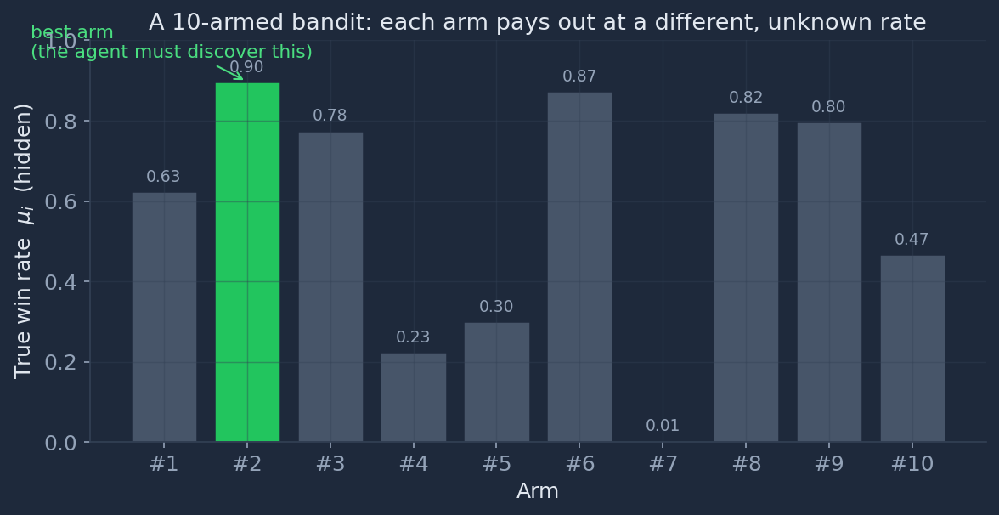
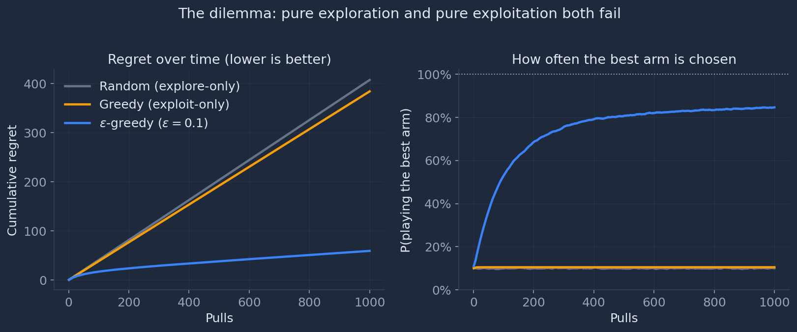
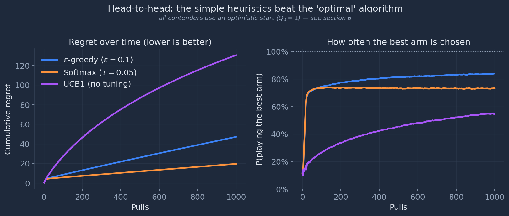
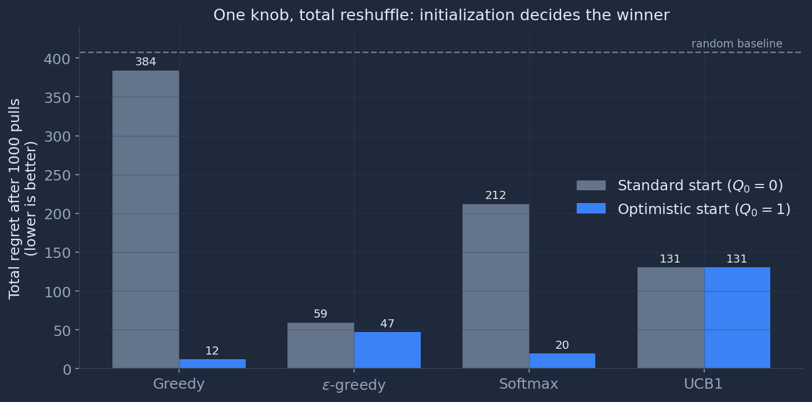

The Dumbest Algorithm Keeps Winning: Why “Optimal” Loses to a Coin Flip
You walk into a casino and face ten slot machines. Each one pays out at its own fixed-but-secret rate. You have a thousand pulls. Every pull costs you the chance to have pulled a different lever , so every pull is two bets at once: a bet on winning now, and a bet on learning something useful for later.
Play it too safe, keep yanking the first machine that pays , and you may never discover the one down the row that pays twice as often. Play it too curious , sample everything, forever , and you spend your whole bankroll gathering data you never cash in on.
That tension has a name: the exploration–exploitation tradeoff. And the slot machines have a name too , the multi-armed bandit. It looks like a toy. It is not. The same problem sits underneath A/B testing, ad allocation, recommender systems, clinical trial design, network routing, and , lately , how large language models get evaluated and routed in production.
If you take one idea from this post, take this one: how you spend your exploration budget , the tuning, the initialization, the fit to the problem in front of you , matters more than owning a theorem that says you spent it optimally. We’ll build intuition, meet the classic algorithms, and run a clean head-to-head whose result genuinely surprised the field: the simplest heuristics in the room routinely beat the algorithm with the Fields-medal-grade theory behind it. Every number and figure below comes from a small simulation you can reproduce; the code ships alongside this post.
1. The setup: a row of unknown odds
Formally, a stochastic bandit is a set of $K$ arms. Arm $i$ has a reward distribution $D_i$ with an unknown mean $\mu_i$. At each turn $t = 1, 2, \dots$ you choose an arm $j(t)$ and receive a random reward $r(t) \sim D_{j(t)}$. That’s the whole game. No state, no chess board, no opponent , just $K$ levers and the slow accumulation of evidence about which one is best.

The catch is that you only ever see samples, never the bars themselves. Pull arm #6 a few times and get unlucky, and it looks worse than arm #8. The whole challenge is statistical: separate signal from noise while the meter is running.
2. Keeping score: regret
How do we grade a strategy? Not by raw reward , that depends on the luck of the draw , but by regret: how much worse you did than an oracle who knew the best arm $\mu^{*} = \max_i \mu_i$ from the start.
$$R_T = T\mu^{*} - \sum_{t=1}^{T} \mu_{j(t)}$$
Regret is the price of not knowing. Pull the best arm every time and your regret is zero. Every suboptimal pull adds its gap $\mu^{*} - \mu_{j(t)}$ to the tab.
Here’s the first deep result, due to Lai and Robbins (1985): you cannot drive regret to zero, no matter how clever you are. Any algorithm that eventually finds the best arm must keep sampling the others often enough to stay sure , and that sampling has a floor that grows with time:
$$R_T = \Omega(\log T)$$
Regret grows at least logarithmically. An algorithm is said to solve the bandit problem if it matches this lower bound , that is, if $R_T = O(\log T)$.
This is a beautiful, slightly humbling fact. The best you can hope for is to be wrong forever, just increasingly rarely. The whole game is about how small you can make the constant in front of that logarithm.
Feel it yourself: take the levers
Before we meet a single algorithm, play the bandit by hand. Below is a real, seeded bandit. Each arm pays out $1$ or $0$ at its own hidden rate; you get a fixed budget of pulls. Your regret , the gap to an oracle that always plays the best arm , ticks up every time you pull something less than the best. Try to keep it low. Then, when the round ends, see the true odds, and let the textbook algorithms ($\epsilon$-greedy and the “optimal” UCB1) play the exact same board so you can compare.
Pull-the-lever bandit
Click an arm to pull it. Each pull is one bet of your budget. You see only what you’ve learned , each arm’s observed win rate and how many times you’ve tried it. The true rates stay hidden until the round ends.
Play it for a minute and the tradeoff stops being a phrase and starts being a feeling. Pound one arm that paid early and you risk never finding the better one two seats down. Spread your pulls evenly and you bleed regret on arms you already suspect are duds. Now let’s see how the textbook algorithms make exactly this choice.
3. The dilemma, made visual
Before any clever algorithm, look at the two ways to lose. Two strategies sit at the extremes:
- Pure exploitation (“greedy”): always pull the arm that currently looks best. No curiosity at all.
- Pure exploration (“random”): ignore what you’ve learned and pull uniformly at random.
Intuitively, both should be terrible , and they are, but for opposite reasons.

That orange line is the one to sit with. Greedy isn’t reckless; it’s reasonable. It always does the locally optimal thing. And it ends up almost as bad as picking at random, because a single unlucky early sample of the true best arm is enough to make it write that arm off forever. Exploitation without exploration is just confident failure.
The fix in the blue curve is almost insultingly simple, which brings us to the contenders.
4. The contenders
Every classic bandit algorithm is, at heart, a different answer to one question: how should I inject exploration into an otherwise greedy policy? Each maintains a running estimate $\hat{\mu}_i$ (call it $Q_i$) of every arm’s value, updated incrementally after each pull.
$\epsilon$-greedy , explore by coin flip. With probability $1-\epsilon$, pull the arm with the highest estimate; with probability $\epsilon$, pull a random arm.
$$p_i(t{+}1) = \begin{cases} 1-\epsilon+\epsilon/K & \text{if } i = \arg\max_j \hat{\mu}_j(t)\\ \epsilon/K & \text{otherwise}\end{cases}$$
It’s a thermostat with one dial. Crude , it explores bad arms exactly as often as promising ones , but shockingly effective, which is the whole punchline of this post.
Softmax (Boltzmann) , explore in proportion to promise. Instead of exploring uniformly, pick each arm with a probability that rises with its estimated value, sharpened by a temperature $\tau$:
$$p_i(t{+}1) = \frac{e^{\hat{\mu}_i(t)/\tau}}{\sum_{j=1}^{K} e^{\hat{\mu}_j(t)/\tau}}$$
When $\tau \to 0$ it becomes pure greedy; when $\tau \to \infty$ it becomes pure random. In between, it spends its exploration budget on plausible contenders instead of wasting it on obvious duds.
UCB1 , optimism in the face of uncertainty. Here’s the elegant one. Don’t explore randomly at all. Instead, give every arm a confidence bonus that’s large when you’ve pulled it rarely and shrinks as evidence accumulates, then act greedily on the inflated values:
$$j(t) = \arg\max_{i} \left( \hat{\mu}_i + \sqrt{\frac{2\ln t}{n_i}} \right)$$
The square-root term is the genius. An arm you’ve barely tried gets the benefit of the doubt; an arm you’ve sampled a thousand times is judged on its merits. UCB1 comes with a proof: its regret is $O(\log t)$, matching the Lai–Robbins lower bound up to a constant. It is, in the formal sense, optimal. (Two other classics , pursuit and reinforcement comparison , round out the family, but they rarely outperform these three, so we’ll keep the spotlight here.)
So we have three strategies: two dead-simple heuristics with no guarantees, and one mathematically optimal algorithm. Which would you bet on?
5. The head-to-head , and the surprise
Let’s race them on the exact bandit from Figure 1: ten arms, moderate noise, a thousand pulls, averaged over four thousand independent games. The result is the reason Kuleshov and Precup’s empirical study is still cited a decade later.

Read that again. The algorithm with the regret bound, the optimism principle, the whole theoretical apparatus, loses to a coin flip. This isn’t a fluke of one lucky seed; in the original study it held across nearly every problem instance the authors tried.
One disclosure before the victory lap, because it carries the rest of the post: all three contenders here run with a sensible, paper-faithful tuning , and that includes an optimistic start, where every arm’s estimate is initialized high so the agent is nudged to taste each one before committing. Hold onto that detail. It is doing quiet work for the heuristics, and in §6 we’ll flip it off and watch this very leaderboard rearrange itself. For now the headline stands: with reasonable tuning, the two heuristics leave the provably-optimal algorithm far behind.
Simple heuristics such as $\epsilon$-greedy and Boltzmann exploration outperform theoretically sound algorithms on most settings by a significant margin.
, Kuleshov & Precup, Algorithms for the Multi-Armed Bandit Problem
Why does the optimal algorithm underperform? Because “optimal” is an asymptotic, worst-case statement. UCB1 is built to never be badly wrong in the limit, against an adversarial problem. Guaranteeing that requires it to keep probing arms long after a pragmatic gambler would have moved on , its confidence bonus fades only as $\sqrt{\ln t / n_i}$, so with ten arms it is still dutifully re-checking the losers at pull 1,000. The simple heuristics make no such promise and, freed from it, just go cash in.
There’s a subtlety worth savoring in the right-hand panel. Softmax wins on regret but $\epsilon$-greedy wins on hit-rate. That’s not a contradiction: $\epsilon$-greedy’s fixed 10% random exploration occasionally pulls genuinely awful arms (raising regret) but relentlessly hammers the single best arm the rest of the time (raising hit-rate). Softmax almost never touches a terrible arm, but it keeps splitting its bets among the top two or three look-alikes. Which one is “better” depends entirely on whether your application is punished by bad choices or by non-best choices , a distinction the single word “regret” quietly hides.
6. The twist: configuration is king
If the first finding dents your faith in theory, the second should reshape how you run experiments at all. Watch what happens when we change exactly one thing , the value each arm is assigned before any data arrives. Standard practice starts every estimate at 0. “Optimistic initialization” starts them all high (say, 1.0), so that every untried arm looks irresistible and the agent is forced to taste each one before settling.

This is the quietly radical part. The “best algorithm” is not a property of the algorithm. It’s a property of the algorithm plus its tuning plus its initialization plus the specific problem. Optimistic initialization turns naive greedy , the strategy we just watched fail in Figure 2 , into the single best performer on the board, because a rosy starting estimate is itself a form of built-in exploration. Change the knob, change the winner. (And notice: this is the same knob the Figure 3 contenders were quietly leaning on. Take it away and softmax’s ~20 balloons to 212 , suddenly worse than the “optimal” UCB1 it was beating.)
The average increase in total regret for an incorrectly tuned algorithm was roughly 20% , and a parameter value optimal on one bandit instance could suddenly become one of the worst after increasing the reward variance by a single notch.
, Kuleshov & Precup
The practical lesson is uncomfortable for anyone who has ever read one benchmark table and picked the top row: a bandit leaderboard tells you almost nothing unless every contender was tuned for the specific problem you actually face. $\epsilon$-greedy’s real superpower in Figure 4 isn’t that it wins , it’s that it’s robust, landing near the front whether you tune it carefully or not.
7. What actually moves the needle
The original study swept across many problem variants and asked which characteristics genuinely change the ranking of algorithms. The answer was bracingly short: only two things matter , the number of arms and the variance of the rewards. The shape of the reward distribution (normal, uniform, skewed, heavy-tailed) barely mattered at all; runs with wildly different distributions but matched means and variances produced near-identical rankings.
That’s a gift to anyone designing experiments. It means you can characterize a new strategy on a small, well-chosen grid of (arm count × variance) settings and trust that the picture generalizes. It also gently warns theorists that chasing ever-tighter bounds based on higher moments of the reward distribution may be polishing a lever that isn’t connected to anything.
8. Why this is everywhere
The reason this toy refuses to stay a toy is that adaptive allocation under uncertainty is a universal shape. A few places the exact same math shows up:
- Clinical trials. This was the original motivation , Robbins framed it in 1952, and Gittins later called trial design the “chief practical motivation” for the whole field. The intuition is visceral: every patient assigned to the inferior treatment is a regret term with a human cost. Kuleshov and Precup re-ran a real 2001–2002 opioid-treatment trial as a simulation and found that a bandit-driven adaptive design would have successfully treated at least 50% more patients, with fewer adverse effects and better retention , while still identifying the better drug with high statistical confidence. The explore–exploit tradeoff, here, is literally measured in lives.
- A/B testing and ads. Classic A/B testing is pure exploration: split traffic 50/50, wait, then switch. A bandit shifts traffic toward the winner as it learns, cutting the cost of running the test. It also sidesteps the “peeking” problem that plagues fixed-horizon significance testing.
- Recommender systems. Every “did you like this?” is a pull. Contextual bandits power feed ranking and content selection on systems large enough that a 1% improvement is a real number.
- LLMs, circa now. This is the live frontier. Bandit strategies are being used to route queries among competing models, to allocate scarce human annotation in RLHF, and to run adaptive evaluations , one 2025 line of work reports identifying the best LLM variant ~37% faster than naive A/B testing. Dueling bandits, which learn from pairwise preferences instead of absolute rewards, map almost perfectly onto preference-based alignment.
And the algorithm most practitioners reach for today isn’t even in our race. Thompson sampling , keep a Bayesian posterior over each arm’s value, sample from it, and play the arm that wins the sample , tends to match or beat UCB while needing almost no tuning. It’s the natural next chapter, and it inherits the same moral as everything above: a little principled randomness goes a long way.
9. The takeaway
Strip away the equations and the multi-armed bandit leaves you with a single, portable idea: information has value, and you have to pay for it in foregone reward. Every adaptive system , a trial, a recommender, an RLHF loop, arguably a career , is constantly deciding how much to spend.
The empirical surprise is that how you spend it matters more than having a theorem that says you spent it optimally. A dead-simple heuristic, tuned for the problem in front of it, repeatedly outran the algorithm with the better résumé. Theory tells you what’s true in the limit; the limit is not where you live.
So here’s the question to carry out of the casino: in your own systems, how much are you currently spending on exploration , and did you choose that number, or did it just default to zero?
Figures & reproducibility
All figures were generated from a vectorized NumPy simulation (10 Gaussian arms, reward standard deviation 0.1, horizon 1,000 pulls, averaged over 4,000 independent runs, seed 2024). The full generator ships with this post as blog/assets/bandit_figures.py , run it, change K and sigma, and watch the leaderboard rearrange itself. The interactive game above runs the same logic, live, in your browser.
Sources & further reading
- Kuleshov, V. & Precup, D. (2014). Algorithms for the Multi-Armed Bandit Problem. arXiv:1402.6028 , the source paper for this post.
- Lai, T. L. & Robbins, H. (1985). Asymptotically efficient adaptive allocation rules. Advances in Applied Mathematics , the $\Omega(\log T)$ lower bound.
- Auer, P., Cesa-Bianchi, N. & Fischer, P. (2002). Finite-time analysis of the multiarmed bandit problem. Machine Learning , UCB1.
- Sutton, R. & Barto, A. Reinforcement Learning: An Introduction. , the canonical reference for $\epsilon$-greedy, softmax, and the explore–exploit framing.
- Multi-Armed Bandits Meet Large Language Models (2025). arXiv:2505.13355 , survey of the modern LLM/RLHF connection.
- Multi-Armed Bandits as an A/B Testing Solution , practitioner framing.